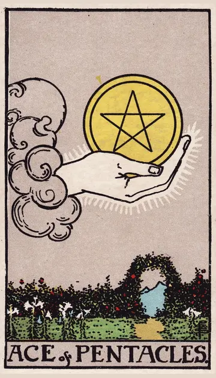

正位置ペンタクルのエースの正位置
キーワード：実り・安定の始まり・チャンス
恋愛
誠実で、現実的な関係が始まりやすい時です。
相手の気持ちあなたとの関係を、真剣に育てたいと感じているようです。
この先安定した関係が、育っていきそうです。
アドバイス気持ちを、形や行動で示してみましょう。
気をつけること条件ばかりで、相手を判断しないように。
この先安定した関係が、育っていきそうです。
アドバイス気持ちを、形や行動で示してみましょう。
気をつけること条件ばかりで、相手を判断しないように。
人間関係
信頼できる人との、確かなつながりが生まれる時です。
相手の気持ちあなたを、信頼できる人だと感じているようです。
この先長く続く信頼関係が、生まれそうです。
アドバイス長く付き合える人との縁を、大切にしましょう。
気をつけること損得だけで、人付き合いを考えないように。
この先長く続く信頼関係が、生まれそうです。
アドバイス長く付き合える人との縁を、大切にしましょう。
気をつけること損得だけで、人付き合いを考えないように。
仕事・学業
収入や成果につながるチャンスが訪れる時期です。
この先新しい収入や成果の芽が、出てきそうです。
アドバイス目の前のチャンスを、確実につかみましょう。
気をつけることチャンスに浮かれて、準備を怠らないように。
アドバイス目の前のチャンスを、確実につかみましょう。
気をつけることチャンスに浮かれて、準備を怠らないように。
お金
お金のチャンスが、訪れやすい時です。
この先収入の芽が、確かに育ちそうです。
アドバイス新しい収入の機会を、しっかりつかみましょう。
気をつけること目先の得に、飛びつかないように。
アドバイス新しい収入の機会を、しっかりつかみましょう。
気をつけること目先の得に、飛びつかないように。
生活
暮らしの土台が、しっかりし始める時です。
この先安定した暮らしが育っていきそうです。
アドバイス毎日の小さな習慣を、一つ始めましょう。
気をつけること形だけ整えて、満足しないように。
アドバイス毎日の小さな習慣を、一つ始めましょう。
気をつけること形だけ整えて、満足しないように。
今日の運勢
ちょっと得をしそうな日です。
この先うれしい臨時収入がありそうです。
アドバイス小さな節約や貯金を始めてみましょう。
気をつけること目先の得に、飛びつかないように。
アドバイス小さな節約や貯金を始めてみましょう。
気をつけること目先の得に、飛びつかないように。
逆位置ペンタクルのエースの逆位置
キーワード：機会を逃す・浪費・準備不足
恋愛
良い縁を、見逃しやすい時です。
相手の気持ちあなたとの関係に、現実的な不安を感じているようです。
この先準備をしておけば、次の縁をつかめそうです。
アドバイス身近にいる人の良さに、目を向けてみましょう。
気をつけること相手に、物やお金で気持ちを求めないように。
この先準備をしておけば、次の縁をつかめそうです。
アドバイス身近にいる人の良さに、目を向けてみましょう。
気をつけること相手に、物やお金で気持ちを求めないように。
人間関係
お金や物のことで、関係がぎくしゃくしやすい時です。
相手の気持ちあなたとの関係を、まだ慎重に考えているようです。
この先信頼を積み直せば、関係が安定しそうです。
アドバイスお金の貸し借りは、慎重にしましょう。
気をつけること損得勘定が、態度に出ないように。
この先信頼を積み直せば、関係が安定しそうです。
アドバイスお金の貸し借りは、慎重にしましょう。
気をつけること損得勘定が、態度に出ないように。
仕事・学業
チャンスを逃したり、準備不足が出たりしやすい時期です。
この先基礎を固めれば、チャンスが戻ってきそうです。
アドバイス基礎を固めて、次のチャンスに備えましょう。
気をつけること計画なしに、お金をかけないように。
アドバイス基礎を固めて、次のチャンスに備えましょう。
気をつけること計画なしに、お金をかけないように。
お金
お金のチャンスを、逃しやすい時です。
この先準備していれば、また機会が来そうです。
アドバイス準備を整えて、次の機会に備えましょう。
気をつけること衝動買いに気をつけて。
アドバイス準備を整えて、次の機会に備えましょう。
気をつけること衝動買いに気をつけて。
生活
暮らしの基盤が、揺らぎやすい時です。
この先基礎を固めれば、安定しそうです。
アドバイス家計や生活の基本を、見直しましょう。
気をつけること計画なしに、生活を変えないように。
アドバイス家計や生活の基本を、見直しましょう。
気をつけること計画なしに、生活を変えないように。
今日の運勢
無駄遣いしやすい日です。
この先節約が、あとで役立ちそうです。
アドバイス買う前に、本当に必要か考えましょう。
気をつけること衝動買いに気をつけて。
アドバイス買う前に、本当に必要か考えましょう。
気をつけること衝動買いに気をつけて。
このページの文章は、アプリ「ひとやすみタロット」の結果に使っている文章です。アプリでは、あなたの相談や、カードが出た位置（今の状況・これからの流れ・アドバイス）に合わせて、この中から文章を選びます。逆位置の読み方は逆位置のことをご覧ください。
「ペンタクルのエース」が出たら、あなたの相談ではどう読む？
アプリでは、質問への答えに合わせて、カードの言葉をあなたの相談に合わせて届けます。
Android 対応・会員登録なし